228 — Proyecto: CloudShop productivo en Azure
Parte: 18 — Azure: arquitectura empresarial y operación en producción
Nivel: avanzado · Horas estimadas: 8
Laboratorio: capstone · Estado: EXECUTABLE_CORE
🎯 Propósito
Poner en producción el sistema completo de CloudShop en Azure con lo de las once clases anteriores, y comprobarlo con las pruebas negativas de toda la parte. La clase da el orden, el entregable y los criterios. Y cierra la parte 18: corrige las cinco predicciones de la clase 216 —tres acertadas y dos a medias—, actualiza el recuento de leyes, añade la ley 27 y escribe la hipótesis de la parte 19, contestando además la pregunta incómoda que la clase 216 se dejó planteada.
📚 Resultados de aprendizaje
Al finalizar podrás:
- Construir el sistema completo en el orden que evita rehacer.
- Comprobar con las pruebas negativas de toda la parte.
- Comparar el resultado con el equivalente en AWS, con cifras.
- Corregir las cinco predicciones de la clase 216 con evidencia.
- Escribir la hipótesis de la parte 19 en forma refutable.
🧩 Conceptos centrales
| Concepto | Comprensión verificable |
|---|---|
ley 27 |
Un control solo actúa sobre lo que cambia; lo que ya existe sigue incumpliendo hasta que alguien lo toque. |
remediación |
Tarea que corrige recursos existentes que incumplen. Es lo único que cierra la brecha que deja la ley 27. |
equivalencia entre nubes |
Correspondencia de conceptos. Alta en lo técnico, baja en el modelo operativo. |
coste de traslado |
Lo que cuesta llevar la misma arquitectura a otra nube. Se paga más en operación que en código. |
prueba negativa de parte |
Comprobación acumulada de las once clases, ejecutada sobre el sistema entero. |
hipótesis de parte |
Afirmación refutable escrita antes de estudiar, que la parte siguiente corrige con evidencia. |
🧠 Modelo mental
La arquitectura Azure nace del tenant y las políticas heredables, y llega al workload mediante identidades administradas y redes privadas.
Aplicado a esta clase, separa siempre cuatro planos: intención (qué necesita el usuario), configuración (qué declaramos), estado observado (qué existe de verdad) y evidencia (cómo sabemos que cumple). Confundirlos produce diseños que se ven correctos en un diagrama pero fallan al operar.
🗺️ Flujo de razonamiento

📖 Desarrollo
1. El encargo, el orden y el entregable
El encargo. Llevar a producción la plataforma de pedidos de CloudShop en Azure, con usuarios reales, guardia, presupuesto y continuidad comprobada.
El orden, por coste de cambio:
1 JERARQUÍA Y POLÍTICAS clase 217
grupos de administración, suscripciones por carga y
entorno, iniciativas en auditoría antes de denegar
→ lo que llega tarde deja recursos incumpliendo
ley 27
2 IDENTIDAD clase 218
identidades administradas y federadas, sin secretos
asignaciones en el ámbito del recurso
elevación temporal y acceso de emergencia probado
3 RED clase 219
centro y radios, salida centralizada
puntos privados con zonas DNS enlazadas a TODAS las
redes
4 CÓDIGO clase 220
separado por ciclo de vida y ámbito, con módulos
verificados y pilas de despliegue
5 DATOS clase 223
familia por patrones, consistencia por operación,
índices recortados
6 CÓMPUTO clases 221, 222
la opción gestionada que corresponda; clúster solo donde
hace falta
7 MENSAJERÍA clase 224
el servicio que garantiza lo que hace falta, con
idempotencia y fallidos vigilados
8 OBSERVABILIDAD clase 225
diagnóstico por política, instrumentación estándar
9 SEGURIDAD clase 226
postura por alcance, detección comprobada con simulación
10 COSTE Y RESILIENCIA clase 227
atribución, compromisos tras retirar, experimentos
El entregable, con las piezas propias de esta parte:
1 el problema, con su cifra
2 jerarquía y iniciativas, con el estado de cumplimiento
3 inventario de identidades y su ALCANCE medido
4 topología de red, con las zonas DNS y su enlace
5 el código, con lo que gestiona cada pila
6 patrones de acceso y niveles de consistencia por
operación
7 la lista de VALORES POR DEFECTO cambiados
8 observabilidad: qué se ingiere, en qué plan y qué cuesta
9 detección: qué técnicas se simulan y cuáles se detectan
10 coste atribuido y por unidad de negocio
11 experimentos de resiliencia y sus hallazgos
12 pruebas negativas, con los fallos publicados
13 lo que NO se hace, y por qué
Las pruebas negativas de la parte:
☐ quitar una política heredada desde una suscripción
☐ crear un recurso sin etiquetas obligatorias
☐ crear un recurso en una región no permitida
☐ obtener la identidad de otro espacio de nombres
☐ asumir una identidad federada desde otro repositorio
☐ activar un papel privilegiado sin aprobación
☐ entrar con la cuenta de acceso de emergencia
☐ alcanzar un radio desde otro radio
☐ resolver un nombre con punto privado desde cada red
☐ alcanzar un servicio con punto privado desde internet
☐ sacar datos a un destino no declarado
☐ desplegar quitando un recurso de la plantilla
☐ borrar la pila y comprobar que los datos sobreviven
☐ enviar el mismo mensaje 50 veces
☐ dejar un mensaje en la cola de fallidos y esperar la
alerta
☐ perder una zona completa
☐ simular 14 técnicas de ataque
☐ provocar la condición de cada alerta
☐ desplegar el entorno de cero en una suscripción vacía
Y los criterios de evaluación, con el peso donde importa:
```text peso 1 las políticas están en grupos de administración 3 2 se midió el cumplimiento antes de denegar 2 3 ninguna asignación amplia sin justificar 3 4 no quedan secretos de cliente sin excepción 3 5 las zonas DNS están enlazadas a todas las redes 3 6 la consistencia se decide por operación 2 7 la lista de valores por defecto cambiados es explícita 3 8 la instrumentación es estándar 2 9 se simulan técnicas y se publica la proporción 3 10 el coste atribuido supera el 90 % 2 11 hay experimentos de resiliencia ejecutados 3 12 las pruebas negativas se ejecutaron y hay fallos publicados 3
### 2. Cierre de la parte 18: corrección de las cinco predicciones
**Las cinco predicciones de la clase 216, corregidas con la evidencia de las clases 217 a 227.**
```text
1. «los valores por defecto de Azure estarán mal elegidos en
proporción parecida a los de AWS, pero fallarán en otro
sitio: los de AWS son permisivos en red y almacenamiento;
los de Azure lo serán en identidad y ámbito de permisos»
PRIMERA MITAD CORRECTA: la lista de valores por defecto
que hubo que cambiar es comparable a la de AWS. SEGUNDA
MITAD FALLADA. Los peores valores por defecto de Azure no
fueron de identidad: fueron de COSTE y de OBSERVABILIDAD.
La consistencia fuerte del asistente costaba 1.720 €/mes;
la política que indexa todos los campos, otros 1.020; y
el 93 % de los recursos no enviaba ningún registro porque
la configuración de diagnóstico no existe si no se crea.
El problema de identidad fue real y grave, pero no era un
valor por defecto: era un error de configuración que
alguien tomó por comodidad.
2. «la jerarquía será el equivalente del plan de direcciones:
se decide en una tarde, condiciona una década, y
renumerarla costará meses»
A MEDIAS, y la diferencia importa. Se decidió mal —47
suscripciones colgando de la raíz— y condicionó todo,
como el plan de direcciones. Pero el mecanismo del coste
es OTRO: mover las 61 suscripciones al grupo correcto fue
instantáneo y gratis. Lo que costó cuatro meses fue
corregir los recursos que ya existían, porque las
políticas de denegación no actúan hacia atrás. En redes,
lo caro es renumerar; aquí, lo caro es que el control
nuevo no toca lo viejo. Y eso es una ley distinta.
3. «la identidad será el eje; el error más frecuente será un
ámbito de asignación demasiado amplio, el equivalente del
comodín de la clase 206»
CORRECTA, y de forma casi literal. De 1.940 asignaciones,
820 estaban en la suscripción y 31 en grupos de
administración; una sola identidad de canalización
alcanzaba 14.200 recursos. Y en el clúster, la credencial
federada atada solo al emisor permitía a cualquier cuenta
de servicio de cualquier espacio de nombres obtenerla. El
mecanismo cambia de nombre en cada nube y produce el
mismo resultado.
4. «la mayoría de los conceptos se corresponderán uno a uno;
lo que no se corresponderá es el modelo operativo, y
trasladar la misma arquitectura costará más en operación
que en código»
CORRECTA. Se correspondieron: federación de identidad,
puntos privados, centro y radios, infraestructura como
código, contenedores, mensajería, observabilidad y coste.
NO se correspondieron: el modelo de políticas, que aquí
es mucho más fuerte y no actúa hacia atrás; el modelo de
ámbitos de asignación; los cinco niveles de consistencia,
que no tienen equivalente; los modos de despliegue; y la
necesidad de crear el diagnóstico recurso a recurso. El
código se tradujo en semanas; entender esas cinco
diferencias operativas costó los tres primeros meses.
5. «los problemas volverán a ser de las leyes 25, 15 y 22; y
si acierta por cuarta vez consecutiva, dejará de tener
mérito y habrá que preguntarse por qué, sabiéndolo, sigue
ocurriendo»
CORRECTA por cuarta vez, y toca contestar la pregunta.
La evidencia: cuatro políticas quitadas por equipos sin
que nadie se enterara; zonas DNS enlazadas a 4 de 43
redes durante siete meses; una configuración sin marcar
como específica de ranura; el 93 % de los recursos sin
diagnóstico; siete de catorce técnicas sin detectar con
las reglas creadas; tres máquinas de un proyecto
terminado en 2024.
Y la respuesta a la pregunta, que es lo que esta clase debe a la anterior:
las leyes 25, 15 y 22 no describen ERRORES
describen el ESTADO POR DEFECTO de cualquier sistema que
cambia
lo provisional se queda porque retirar es trabajo
y nadie lo pide
la señal no se mira porque mirar es trabajo
continuo y no urgente
el procedimiento no funciona porque ejecutarlo es
trabajo y no hay incidente
→ no hace falta que nadie se equivoque para que se cumplan
→ hace falta que nadie haga algo, y eso ocurre siempre
y por eso saberlas no basta
el equipo de este programa las conocía en las cuatro
partes y las cuatro veces volvieron a ocurrir
→ lo único que las contrarresta es que la comprobación
sea AUTOMÁTICA y PERIÓDICA
→ una persona que conoce la ley 15 sigue sin mirar el
panel
→ una alerta de antigüedad, no
Marcador: tres correctas, dos a medias.
3. Recuento de leyes, ley 27 e hipótesis de la parte 19
El recuento de leyes, cerrada la parte 18.
ley 13 lo que no se mira deja de funcionar en silencio 50
ley 15 la señal existe y nadie la mira 39
ley 22 un procedimiento nunca ejecutado no funciona 34
ley 14 el coste se decide al crear, no al pagar 31
ley 16 un control que estorba se rodea 29
ley 20 lo que no tiene dueño se filtra y se desperdicia 28
ley 21 el acoplamiento vive en quién escribe 23
ley 25 lo provisional sobrevive a su motivo 18
ley 23 la capacidad la limita lo que ya se mantiene 16
ley 26 el valor por defecto sirve a la demostración 12
ley 24 lo que no está en el diagrama no se analiza 12
ley 17 se optimiza la medida, no el objetivo 12
ley 19 la compensación hace invisible el fallo 10
ley 18 lo asíncrono traslada la garantía, no la elimina 8
Y la parte 18 obliga a escribir una ley nueva, que explica el fallo de la predicción 2:
LEY 27
un control solo actúa sobre lo que cambia;
lo que ya existe sigue incumpliendo hasta que alguien
lo toque
apariciones en esta parte 5
clase 217 mover 61 suscripciones al grupo correcto
corrigió CERO recursos existentes; 14.200
siguieron incumpliendo
clase 219 la automatización de zonas DNS no enlazó las
creadas antes; 39 radios quedaron fuera
clase 220 el despliegue incremental nunca borra lo que
deja de estar declarado: 1.140 huérfanos
clase 222 activar la política de red no cambia lo ya
desplegado, y en algunas configuraciones
exige recrear el clúster
clase 226 cerrar una recomendación no impide que el
recurso siguiente nazca igual
y lo que la distingue
la ley 25 dice que lo provisional se queda
la ley 26 dice que el valor inicial está mal elegido
la 27 dice algo distinto: que ARREGLAR LA REGLA no
arregla lo que ya se hizo con la regla anterior
→ y el remedio no es una política mejor: es una TAREA DE
REMEDIACIÓN, que es trabajo, y hay que planificarlo
→ toda implantación de un control necesita dos planes:
el de lo nuevo y el de lo viejo
La hipótesis de la parte 19 (clases 229 a 240, Google Cloud en producción), escrita antes de estudiarla:
1. la tercera nube confirmará la equivalencia conceptual y
volverá a diferir en el modelo operativo; y esta vez lo
que más costará no será aprender lo distinto sino
DESAPRENDER lo de las dos anteriores: los errores serán
de trasladar suposiciones que aquí no valen
2. la jerarquía de proyectos y la red compartida serán otra
vez la decisión que condiciona todo, con un matiz: aquí
el proyecto es una frontera más fuerte que la suscripción,
y eso hará que el error frecuente sea el CONTRARIO —
demasiados proyectos, no demasiado pocos
3. la identidad volverá a ser el eje, y el error más
frecuente volverá a ser el ámbito amplio: una asignación
en la organización o en la carpeta en vez de en el
recurso ley 27, 218
4. los valores por defecto volverán a estar mal elegidos para
producción, y aquí fallarán sobre todo en RED: la red
global y los servicios con acceso público por defecto
serán la fuente principal ley 26
5. y la predicción que ya no tiene mérito, con su corolario:
los problemas del proyecto serán otra vez de las leyes
25, 15 y 22. Lo que sí es refutable es esto: **la
proporción de hallazgos que detecte una comprobación
automática y periódica será mayor que en las partes 17 y
18**, porque en esas dos aprendimos a montarlas. Si no lo
es, el aprendizaje no se está trasladando
Y el cierre de la parte 18: de once clases, lo que más dinero movió no fue ninguna decisión de arquitectura sino dos casillas de un asistente de creación —el nivel de consistencia y la política de índices—, y lo que más riesgo concentró fue una sola asignación de permisos con el ámbito demasiado alto. La parte 19 hace el mismo recorrido en Google Cloud, empezando por su jerarquía de recursos y su red compartida. Es la clase 229.
4. Comparar las dos nubes, con cifras
Con el mismo sistema montado en dos nubes, se puede comparar de verdad. Y conviene, porque es la única forma de separar lo que es propio del proveedor de lo que es propio del método.
LO QUE RESULTÓ EQUIVALENTE
el techo de disponibilidad se calcula igual clase 185
la aritmética de colas y concurrencia clase 186
la decisión de consistencia por operación clase 187
la idempotencia y la cola de fallidos clases 210, 224
la disciplina de despliegue escalonado
la estructura del código por ciclo de vida
y las pruebas negativas, una a una
LO QUE NO
el modelo de gobierno: en Azure las políticas se heredan
y son fuertes; en AWS las barreras y los controles
están más repartidos
el modelo de permisos: papel más ámbito frente a política
con condiciones
la observabilidad: aquí hay que crear el diagnóstico
recurso a recurso
y la consistencia configurable, que no tiene equivalente
Y la comparación de esfuerzo, medida:
AWS Azure
tiempo hasta el primer
despliegue productivo 9 semanas 7 semanas
→ más rápido la segunda vez, por el método, no por la
nube
líneas de infraestructura
como código ~4.100 ~3.800
valores por defecto que hubo
que cambiar 24 19
pruebas negativas ejecutadas 19 19
que fallaron la primera vez 7 8
coste mensual del mismo sistema 16.700 € 17.400 €
→ diferencia del 4 %, dentro del ruido
tiempo dedicado a aprender el
modelo OPERATIVO — 3 meses
→ y esto es lo que la predicción 4 acertaba
Y las dos conclusiones que se pueden defender:
1 el coste de un sistema equivalente es parecido
→ elegir nube por precio de lista es un error
→ lo que cambia el coste son las decisiones de diseño,
no el proveedor clases 216, 227
2 el coste de OPERAR dos nubes no es el doble: es más
dos modelos de gobierno, dos de permisos, dos de
observabilidad, dos calendarios de actualización
→ y por eso la multinube se justifica por requisitos,
no por preferencia clase 157
Y una advertencia sobre el traslado:
las suposiciones de la nube anterior son el mayor riesgo
«esto se hereda» — aquí no
«esto ya viene activado» — aquí no
«el borrado no se propaga» — aquí sí
→ y por eso el orden de la parte empieza otra vez por lo
que condiciona todo, en vez de por lo que ya se sabe
Y la lista de comprobación de la clase:
☐ el sistema se construyó en el orden por coste de cambio
☐ hay lista explícita de valores por defecto cambiados
☐ el alcance de cada identidad está medido
☐ las zonas DNS están enlazadas a todas las redes
☐ la consistencia está decidida por operación
☐ la instrumentación es estándar
☐ se simulan técnicas y se publica la proporción detectada
☐ hay plan de remediación de lo existente, no solo de lo
nuevo
☐ las 19 pruebas negativas se ejecutaron y hay fallos
publicados
☐ el entorno se despliega de cero desde el código
☐ el coste está atribuido por encima del 90 %
☐ está escrito lo que no se hace
Y el cierre que enlaza con la clase siguiente: la parte 19 repite el recorrido en Google Cloud, con el riesgo añadido de trasladar suposiciones que allí no valen. Empieza por la jerarquía de recursos y la red compartida, en la clase 229.
🔬 Ejemplo trabajado
El sistema de CloudShop en producción en Azure. Lo que sigue es la lista de valores por defecto cambiados, el resultado de las diecinueve pruebas negativas —de las que fallaron ocho— y la comparación con el mismo sistema en AWS.
La lista de valores por defecto cambiados:
servicio por defecto cambiado a
────────────────────────────────────────────────────────────
base distribuida consistencia fuerte acotada 5 s,
sesión y
eventual por
petición
base distribuida indexa todos los campos 7 de 61
base distribuida 1 región 2 (lectura)
grupo de seguridad salida a internet ruta al
permitida cortafuegos
recursos sin diagnóstico por política
registros retención global por tabla
registros plan analítico básico donde
procede
app service acceso público punto privado
app service salida pública integración de
red
app service config no específica marcada por
de ranura ranura
clúster política de red activada
desactivada
clúster red plana (asistente) superpuesta
bus bloqueo 30 s 120-300 s
bus sin renovación de activada
bloqueo
flujo retención 1 día 3 días
flujo posición antes de después
procesar
despliegue modo incremental sin pilas de
ciclo de vida despliegue
políticas asignadas en en grupos de
suscripción administración
alertas grupos por equipo uno por turno
total 19
que funcionaban sin cambiarlos 19
Las diecinueve pruebas negativas: ocho fallaron.
✓ quitar una política heredada desde suscripción imposible
✓ crear recurso sin etiquetas rechazado
✓ crear en región no permitida rechazado
✗ obtener la identidad de otro espacio de nombres
→ 1 de 7 credenciales federadas ataba solo el emisor:
la del operador de base vectorial, añadida después de
la revisión clase 222
✓ asumir identidad federada desde otro repositorio denegado
✗ activar papel privilegiado sin aprobación
→ 2 papeles se habían añadido como elegibles sin exigir
aprobación, al crear un equipo nuevo
✓ entrar con la cuenta de emergencia 45 s
✓ alcanzar un radio desde otro radio denegado
✗ resolver nombre con punto privado desde cada red
→ 2 radios creados el mes anterior no tenían las zonas
enlazadas: la automatización se había desplegado
DESPUÉS de crearlos ley 27, 219
✓ alcanzar servicio con punto privado desde internet
denegado
✗ sacar datos a un destino no declarado
→ funcionó desde el clúster: la política de red
restringía entre pods, no la salida a internet
clase 222
✓ desplegar quitando un recurso de la plantilla borrado
✗ borrar la pila y comprobar los datos
→ una cuenta de almacenamiento de un servicio nuevo no
tenía bloqueo de borrado ni estaba en la pila de datos
✓ mismo mensaje 50 veces 1 efecto
✓ mensaje en cola de fallidos → alerta 38 s
✗ perder una zona completa
→ 12 min 40 s de degradación: dos servicios añadidos
tras el último experimento no tenían restricción de
reparto clase 227
✗ simular 14 técnicas de ataque 13 de 14
→ la que falta, aceptada por escrito
✗ provocar la condición de cada alerta
→ 4 de 58 no llegaron; 3 por umbral y 1 en estado de
error clase 225
✓ desplegar el entorno de cero 94 min
Y el análisis de las ocho:
seis por elementos AÑADIDOS después de la última revisión
· una credencial federada
· dos papeles elegibles
· dos radios sin zonas enlazadas
· una cuenta de almacenamiento sin bloqueo
· dos servicios sin restricción de reparto
dos por un control que no cubría lo que se creía
· política de red que no restringe la salida
· umbrales de alerta
→ y es el mismo diagnóstico de la clase 216: el sistema
creció y las comprobaciones no crecieron con él
→ con un matiz nuevo: cuatro de los seis casos son de la
ley 27, porque la automatización llegó después que el
recurso
Y la corrección de método que salió:
toda automatización nueva se acompaña de una TAREA DE
REMEDIACIÓN sobre lo existente
y una comprobación periódica que compare el estado real
con el esperado, no solo en el momento de crear
→ y esa comprobación encontró, en los tres meses
siguientes
5 radios sin zonas enlazadas
3 recursos sin bloqueo de borrado
2 credenciales federadas mal atadas
→ todos, creados después de la automatización
correspondiente
Las cifras del sistema en producción, tras tres meses:
```text objetivo medido p99 del flujo de compra < 500 ms 438 ms disponibilidad observada 99,8 % 99,84 % coste mensual 15.000 € 17.400 € coste por pedido 0,050 € 0,051 € pérdida de una zona: degradación 0 min 12 min 40 (tras corregir) 0 min coste atribuido 90 % 94 % alertas por turno < 2 0,9 técnicas simuladas detectadas > 90 % 13/14 despliegue del entorno de cero — 94 min
**La comparación con AWS, del mismo sistema:**
```text AWS Azure
p99 del flujo de compra 412 ms 438 ms
disponibilidad observada 99,86 % 99,84 %
coste mensual 16.700 € 17.400 €
coste por pedido 0,046 € 0,051 €
valores por defecto cambiados 24 19
pruebas negativas fallidas 7 8
tiempo hasta producción 9 semanas 7 semanas
líneas de infraestructura ~4.100 ~3.800
equipo dedicado a la plataforma 2,1 2,4
→ la diferencia está en el modelo operativo, no en la
tecnología
Y las tres cosas que se decidió no hacer:
no operar las dos nubes en activo-activo: el coste de
operar dos modelos de gobierno no compensa clase 157
no migrar las cargas de AWS: funcionan
no unificar la observabilidad en un solo proveedor
todavía: se revisa cuando el volumen lo justifique
La lección que este proyecto deja: los diecinueve valores por defecto cambiados funcionaban todos sin cambiarlos, y dos de ellos —dos casillas de un asistente— costaban dos mil setecientos euros al mes. De las ocho pruebas negativas fallidas, cuatro fueron por recursos creados antes de que existiera la automatización que los cubriría, que es la ley 27 en su forma más directa. Y comparado con AWS, el mismo sistema costó un 4 % más y necesitó un 14 % más de equipo: la diferencia está en operar dos modelos, no en la tecnología.
🧪 Laboratorio guiado
Ejecuta desde la raíz:
python classes/part-18-azure-production-architecture/228-proyecto-cloudshop-productivo-en-azure/lab.py
El laboratorio selecciona el motor de práctica capstone y produce
lab_result.json. El escenario, sus comprobaciones y el artefacto esperado corresponden a
esta clase; no requiere credenciales y deja explícito qué debe revalidarse en un sandbox real.
- Lee
exercise.stepsy formula una predicción antes de ejecutar. - Ejecuta la práctica y verifica todos los elementos de
checks. - Provoca el caso de
negative_testy explica la señal observada. - Materializa
cloudshop-azureenevidence/usando la plantilla indicada. - Para proveedor real, sigue
sandbox.requires, registra costo y ejecutadestroy.
Evidencia esperada
El artefacto principal es un incremento integrado, demostrable y documentado. Además, la entrega debe incluir el comando ejecutado, la salida estructurada y una conclusión que no exceda lo observado.
🏆 Reto verificable
Construye cloudshop-azure para el caso CloudShop. Incluye una alternativa descartada,
un supuesto que pueda falsarse, una prueba de fallo y una decisión de rollback.
✅ Criterio de aceptación
- [ ]
lab.pytermina con código 0 y genera JSON válido. - [ ] La entrega conecta al menos tres requisitos con mecanismos verificables.
- [ ] Existe una prueba positiva y una prueba negativa con evidencia.
- [ ] Seguridad, costo y operación aparecen como decisiones, no como anexos.
- [ ] Se declara una limitación y una condición que obligaría a revisar el diseño.
- [ ] Otra persona puede repetir el recorrido sin conocimiento tácito.
⚠️ Errores frecuentes
| Síntoma | Causa probable | Corrección |
|---|---|---|
| Se implanta un control y los recursos existentes siguen incumpliendo | Los controles actúan sobre creaciones y modificaciones, no hacia atrás | Toda implantación necesita dos planes: el de lo nuevo y una tarea de remediación de lo existente. |
| Una automatización cubre unos recursos y no otros | Los recursos anteriores a la automatización no pasaron por ella | Ejecuta la automatización sobre lo existente y añade una comprobación periódica que compare el estado real con el esperado. |
| Al trasladar la arquitectura a otra nube fallan cosas que en la anterior funcionaban | Se trasladaron suposiciones del modelo operativo anterior | Empieza por lo que condiciona todo en la nube nueva y comprueba explícitamente qué se hereda, qué viene activado y qué se propaga. |
| Las pruebas negativas pasan y aparecen huecos nuevos | El sistema creció y las comprobaciones no crecieron con él | Añade una prueba negativa por cada capacidad nueva y ejecútalas periódicamente, no solo al terminar. |
| Se elige la nube por precio de lista y no se ahorra | El coste lo deciden las decisiones de diseño, no el proveedor | Compara el coste del mismo sistema montado bien en ambas; la diferencia suele estar dentro del ruido. |
| Operar dos nubes consume mucho más equipo del previsto | Se contó el código y no los modelos de gobierno, permisos, observabilidad y actualizaciones | Justifica la multinube por requisitos y no por preferencia, contando el coste operativo real. |
🛡️ Seguridad, ética y costo
Trabaja con cuentas propias o sandboxes autorizados. No publiques secretos, identificadores reales ni datos personales. Antes de crear recursos pagos define presupuesto, etiquetas y comando de destrucción; después verifica que no queden recursos huérfanos. Los ejemplos locales enseñan contratos, pero no certifican cumplimiento ni disponibilidad de producción.
❓ Preguntas de comprobación
- ¿Cuál de las cinco predicciones de la clase 216 falló y en qué mitad?
- ¿Qué dice la ley 27 y en qué se distingue de las leyes 25 y 26?
- ¿Por qué saber las leyes 25, 15 y 22 no basta para evitar que se cumplan?
- ¿Qué se correspondió entre las dos nubes y qué no?
- ¿Cuántas de las pruebas negativas fallidas se deben a la ley 27?
🔗 Referencias
- Microsoft (2025). Azure Well-Architected Framework. https://learn.microsoft.com/en-us/azure/well-architected/
- Microsoft (2025). Cloud Adoption Framework: Azure landing zones. https://learn.microsoft.com/en-us/azure/cloud-adoption-framework/ready/landing-zone/
- Microsoft (2025). Azure Policy remediation tasks. https://learn.microsoft.com/en-us/azure/governance/policy/how-to/remediate-resources
- Beyer, B. y otros (2018). The Site Reliability Workbook. https://sre.google/workbook/table-of-contents/
- Basiri, A. y otros (2016). Chaos engineering. https://ieeexplore.ieee.org/document/7503833
- Documentación oficial vigente del servicio implementado; registra URL y fecha de consulta.
📥 Descargar: Parte 18 en PDF · Recorrido de Azure en PDF · Manual integral